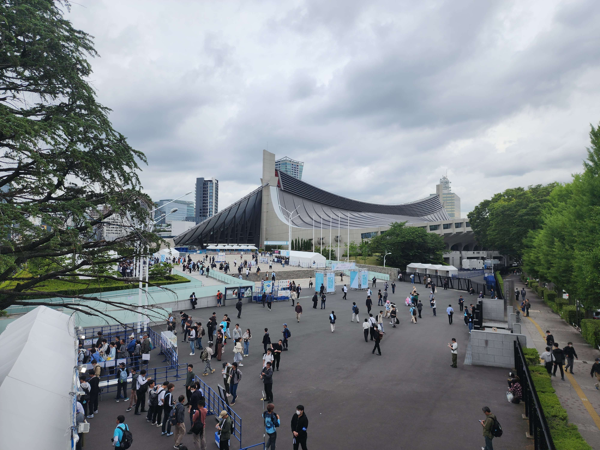
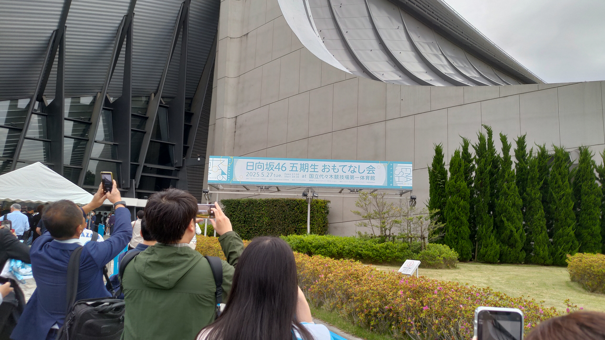
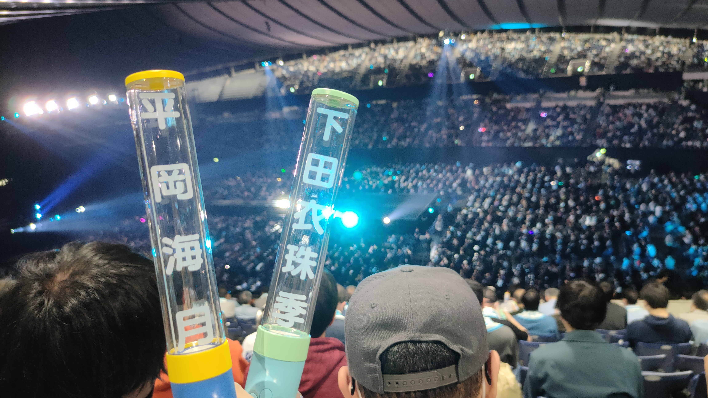
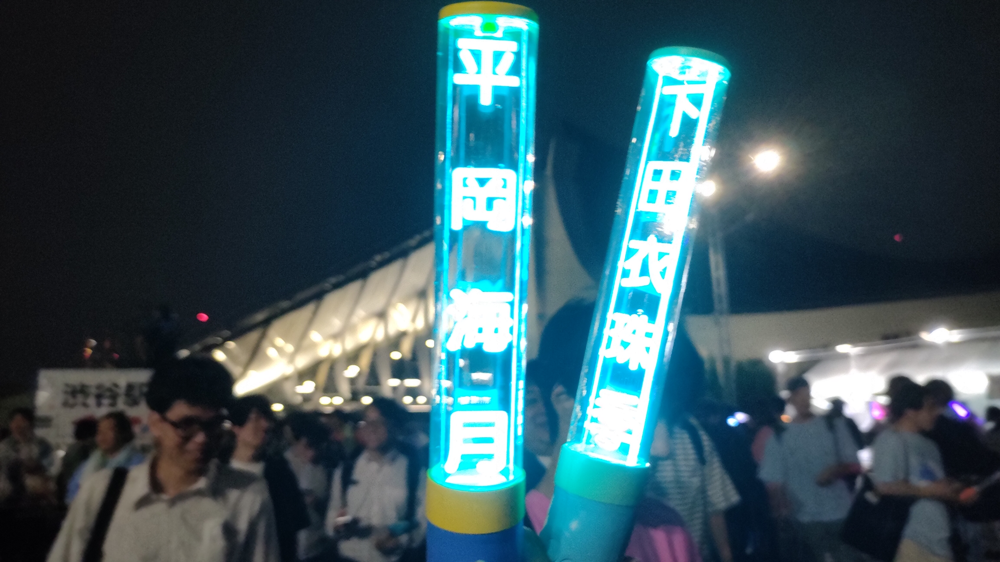

短めの日本旅行日記
2025年、初めて日本に旅行しました。
ライブを行くため、初めて日本に旅行しました。
ほとんど計画がない、非常に「何もなかった」旅行の日記ですが。。。

無計画旅でした。
(母は古風な雰囲気を持っている場所を好んでいるので一日に川越に行きました。しかし、観光に夢中になってしまい、いい写真が撮りませんでした。)
ずっとドラマや映画に見えてきた渋谷、やっと到着しました！

やはり、迷ってしまうのは不可避。
Google Mapsを使っても、東京の道路は難しいかった。母を連れてしまい、申し訳ない気持ちがたまらなく、次の日は完全に公共交通機関を使いました。
道に迷ってしまい、近所に小さな寺を見つけました。


